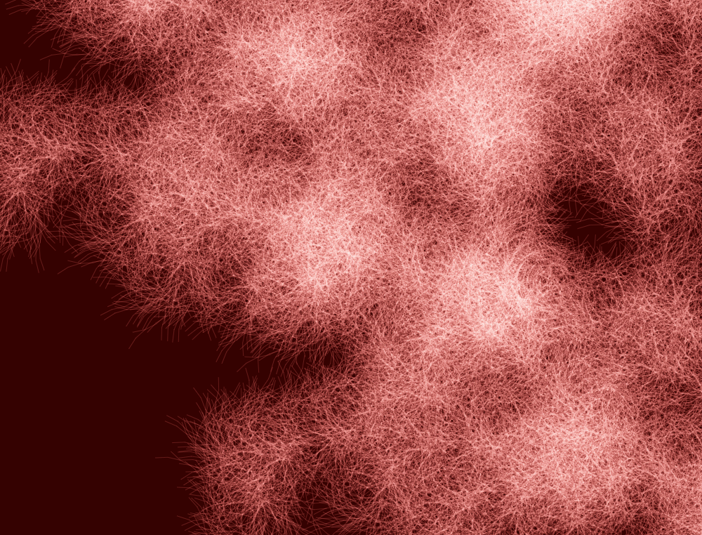

*generative bacteria
Inspired by bacteria, Tal Danino Art Microbial Rainbow, cymatic symbols, optical tomography of irises, and Anicka Yi's petri dish art; utilization of L-systems, by theoretical biologist Aristid Lindenmayer.